0: We are able to identify the existence of overfitting for MLP models trained longer than 500 episodes.

1: KNN with less than 7 neighbours is in overfitting.

2: The difference between recall and accuracy becomes smaller with the depth due to the overfitting phenomenon.

3: The first 10 principal components are enough to explain half the data variance.

4: Removing variable hemoglobin would not improve the training of the decision tree algorithm .

5: A scaling transformation is mandatory, in order to improve the KNN performance in this dataset.

6: Considering the common semantics for sex variable, dummification would be the most adequate encoding.

7: Balancing this dataset would be mandatory to improve the results.
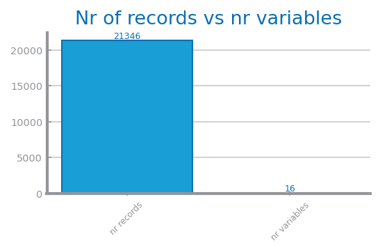8: As we are facing the curse of dimensionality, dummification could be a better option than using binary variables.

9: The existence of outliers is one of the problems to tackle in this dataset.

10: The first 2 principal components are enough for explaining half the data variance.

11: Applying a non-supervised feature selection based on the redundancy, would not increase the performance of the generality of the training algorithms in this dataset.
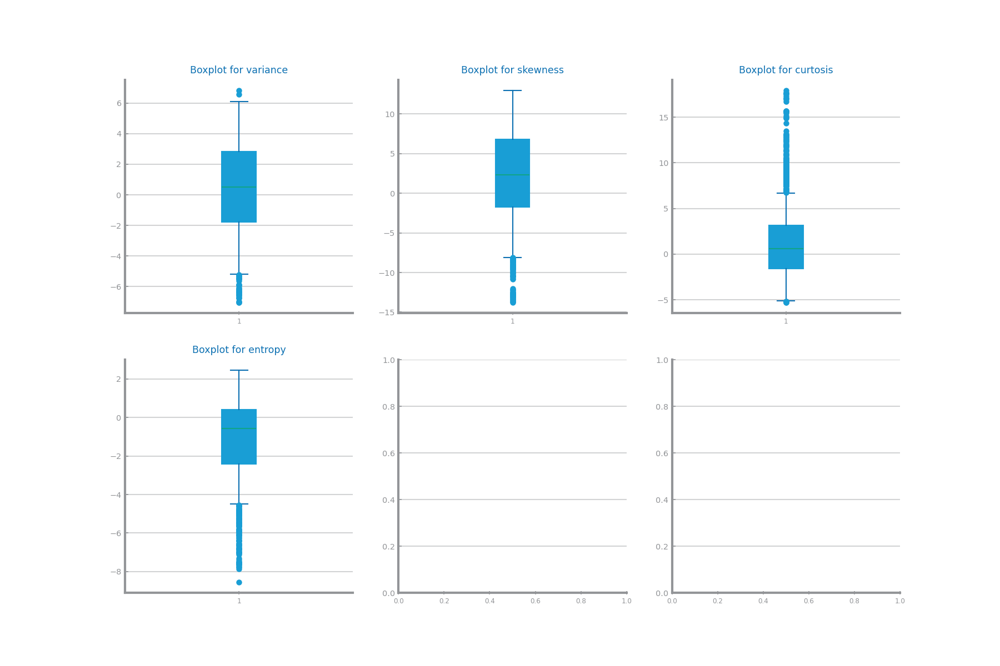12: A scaling transformation is mandatory, in order to improve the KNN performance in this dataset.

13: Balancing this dataset would be mandatory to improve the results.
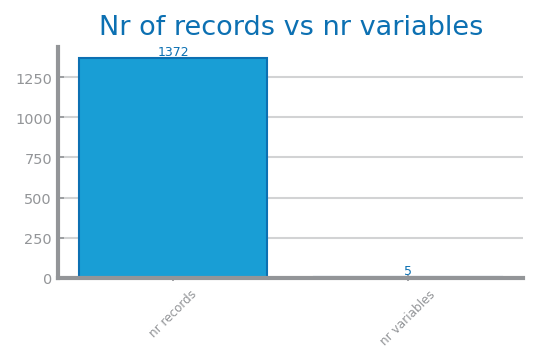14: We face the curse of dimensionality when training a classifier with this dataset.

15: Normalization of this dataset could not help a KNN algorithm to outperform a Naive Bayes.

16: As reported in the chart, the MLP enters into overfitting after 500 iterations.

17: The random forests results shown can be explained by the fact that the models become more complex with the number of estimators.

18: KNN is in overfitting for k less than 5.

19: According to the decision tree overfitting chart, the tree with 12 nodes of depth is in overfitting.

20: The first 2 principal components are enough for explaining half the data variance.

21: The intrinsic dimensionality of this dataset is 3.

22: Balancing this dataset would be mandatory to improve the results.
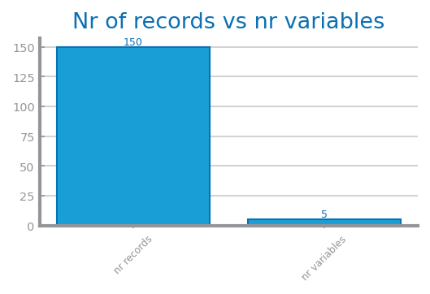23: We face the curse of dimensionality when training a classifier with this dataset.

24: It is clear that variable SepalLengthCm shows some outliers, but we can’t be sure of the same for variable PetalWidthCm.
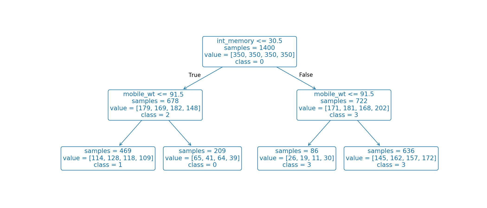25: Pruning can only improve the decision tree presented if it is based on post-pruning.

26: We are able to identify the existence of overfitting for MLP models trained longer than 700 episodes.

27: We are able to identify the existence of overfitting for gradient boosting models with more than 1002 estimators.

28: Results for Random Forests identified as 20, may be explained by its estimators being in overfitting.

29: We are able to identify the existence of overfitting for KNN models with less than 3 neighbors.

30: The first 3 principal components are enough for explaining half the data variance.
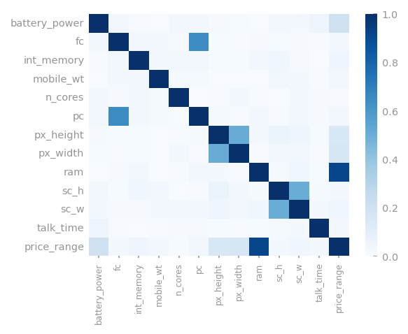31: The intrinsic dimensionality of this dataset is 11.

32: The existence of outliers is one of the problems to tackle in this dataset.

33: We face the curse of dimensionality when training a classifier with this dataset.
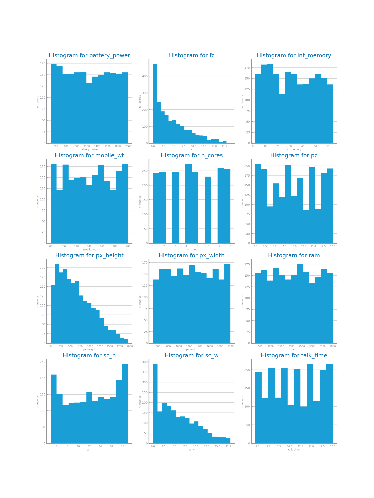34: The histograms presented show a large number of outliers for most of the numeric variables.

35: Considering that A=True<=>[Pclass <= 2.5] and B=True<=>[Parch <= 0.5], the Decision Tree presented classifies (not A, B) as 1.

36: We are able to identify the existence of overfitting for MLP models trained longer than 700 episodes.
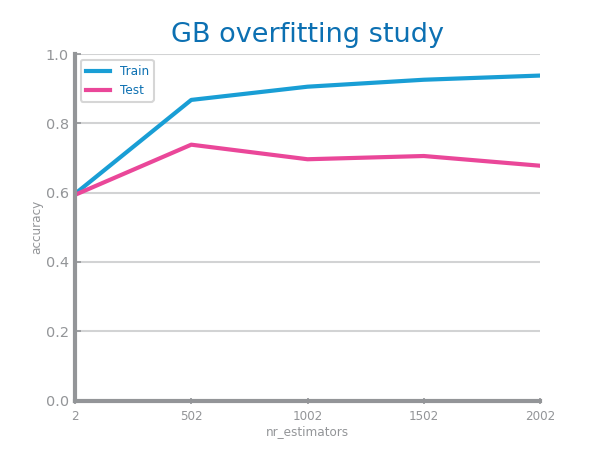37: We are able to identify the existence of overfitting for gradient boosting models with more than 1502 estimators.

38: We are able to identify the existence of overfitting for random forest models with more than 1002 estimators.

39: KNN with 7 neighbour is in overfitting.

40: We are able to identify the existence of overfitting for decision tree models with more than 3 nodes of depth.
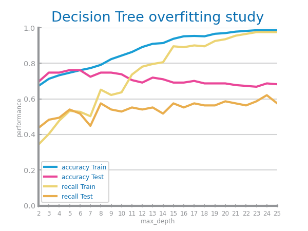41: The difference between recall and accuracy becomes smaller with the depth due to the overfitting phenomenon.
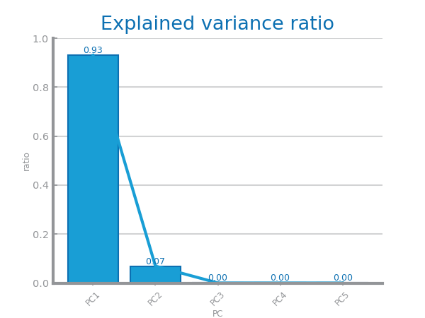42: Using the first 4 principal components would imply an error between 5 and 20%.

43: The intrinsic dimensionality of this dataset is 2.

44: Multiplying ratio and Boolean variables by 100, and variables with a range between 0 and 10 by 10, would have an impact similar to other scaling transformations.

45: All variables, but the class, should be dealt with as numeric.

46: We face the curse of dimensionality when training a classifier with this dataset.

47: The number of True Positives is lower than the number of False Negatives for the presented tree.

48: We are able to identify the existence of overfitting for MLP models trained longer than 700 episodes.
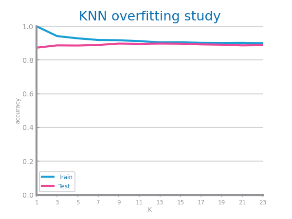49: We are able to identify the existence of overfitting for KNN models with less than 3 neighbors.

50: The difference between recall and accuracy becomes smaller with the depth due to the overfitting phenomenon.

51: The first 3 principal components are enough for explaining half the data variance.

52: The variable Juiciness can be discarded without risking losing information.

53: Scaling this dataset would be mandatory to improve the results with distance-based methods.

54: Balancing this dataset would be mandatory to improve the results.

55: We face the curse of dimensionality when training a classifier with this dataset.
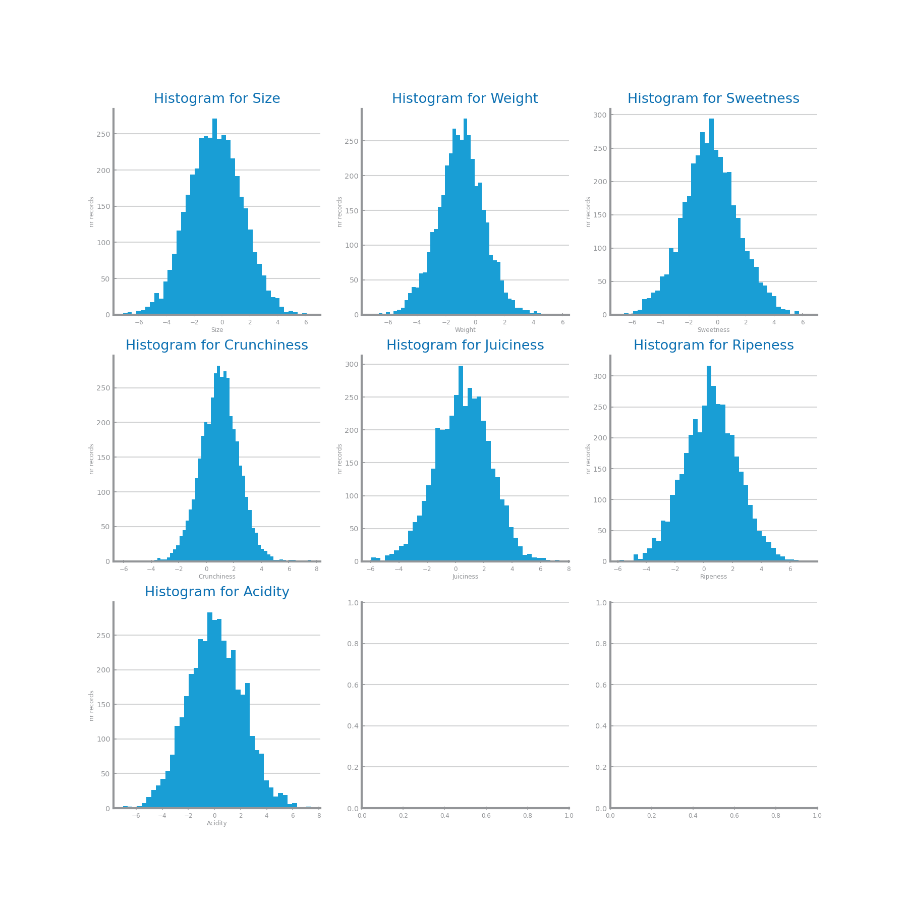56: The histograms presented show a large number of outliers for most of the numeric variables.